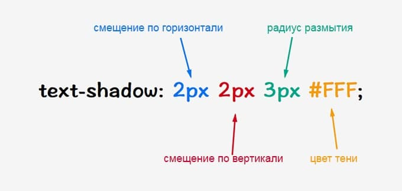

Свойство font-size изменяет размер шрифта. Оно задаётся с помощью значения и единицы измерения (em, px, pt, %). Единицы измерения em и % являются относительными и зависят от размера шрифта установленного в документе. Единицы измерения px и pt являются абсолютными и их размер зависит от разрешения экрана.
Примеры:
Текст равен 30px
Текст равен 1em
Текст равен 2em
Текст равен 20pt
Текст равен 160%
Устанавливает насыщенность шрифта. Значение устанавливается от 100 до 900 с шагом 100. Сверхсветлое начертание, которое может отобразить браузер, имеет значение 100, а сверхжирное — 900. Нормальное начертание шрифта (которое установлено по умолчанию) эквивалентно 400, стандартный полужирный текст — значению 700.
Примеры:
Светлый текст
Нормальный текст
Жирность 400 кг))0)))
Жирность 600 кг))0)))
Толще
Любое число больше нуля воспринимается как множитель от размера шрифта текущего текста. Например, значение 1.5 устанавливает полуторный межстрочный интервал. В качестве значений принимаются также любые единицы длины, принятые в CSS — пикселы (px), дюймы (in), пункты (pt) и др. Разрешается использовать процентную запись, в этом случае за 100% берется высота шрифта.
Примеры:
Межстрочный интервал 100px
Межстрочный интервал 1pt
Добавляет оформление текста в виде его подчеркивания, перечеркивания, линии над текстом и мигания. Одновременно можно применить более одного стиля, перечисляя значения через пробел.
Примеры:
Подчеркивание
Подчеркивание с точками
Подчеркивание с точками КРАСНЫМИ
Подчеркивание волной ЗЕЛЕНОЙ
Верхнее и нижнее подчеркивание СИНЕЕ
Управляет преобразованием текста элемента в заглавные или прописные символы. Когда значение отлично от none, регистр исходного текста будет изменен.
Примеры:
Первый символ каждого слова в предложении будет заглавным. Остальные символы свой вид не меняют.
Все символы текста становятся строчными (нижний регистр).
Все символы текста становятся прописными (верхний регистр).
Устанавливает величину отступа первой строки блока текста (например, для абзаца p). Воздействия на все остальные строки не оказывается. Допускается отрицательное значение для создания выступа первой строки, но следует проверить, чтобы текст не выходил за пределы окна браузера.
Примеры:
Отступ в 5%
Отступ в 20px
Сolor устанавливает цвет текста
Примеры:
Цвет в RGB
Цвет в hex
Цвет словами
Добавляет тень к элементу. Допускается использовать несколько теней, указывая их параметры через запятую, при наложении теней первая тень в списке будет выше, последняя ниже. Если для элемента задается радиус скругления через свойство border-radius, то тень также получится с закругленными уголками.

Примеры:
Плакатная тень
3D тень
Тень-текст
Ретро-тень
Многослойная тень
Прозрачная тень
Тень-зебра
Неоновая тень
Тень обводка
Изображение во весь экран (без повторений)
Рисунок на поле c применением таблиц